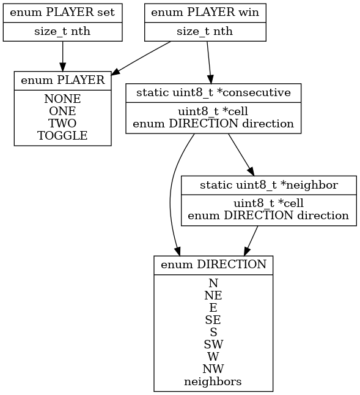

Benjamin Raskin, Student No. 180312330
Chen Jin, Student No. 170631720
Xing Jia, Student No. 180164170
Huiqiao Yang, Student No. 186803710
Yongtai Yang, Student No. 190624980
Mengyuan Liu, Student No. 186802750
Zehao Liu, Student No. 193074000
Ning Nan, Student No. 193064800
Tony Yoon, Student No. 170475670
Shaojun Zheng, Student No. 190665650
Ruicheng Zhao, Student No. 190519490
Wilfrid Laurier University
Gomoku is an web based implementation of the classic Gomoku game. See the requirements document for details on project as well as Gomokue game.
This document will cover the analysis of the requirements to implement the Gomoku project as well as how they work.
NOTE The project is built using C, an imperative language, thus functions are used instead of objects.
|
• |
table - Table representing board upon which game is played | |
|
• |
player - Current player state |
|
• |
neighbor - Get neighboring cell in a direction | |
|
• |
consecutve - Get consecutive similar cells in a direction |
|
• |
set - Set Nth cell to current player state | |
|
• |
win - Determine if a current player won based on Nth cell |
|
• |
User will begin playing the game as soon as the page is done loading | |
|
• |
User will end playing when game indicates as such |
NOTE The project is built using C, an imperative language, thus functions are used instead of objects.
